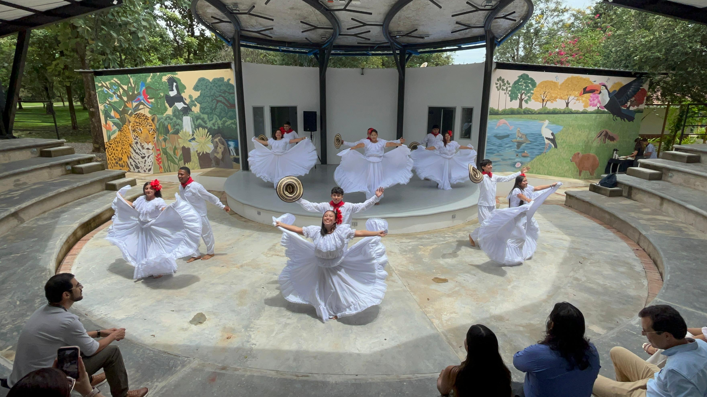
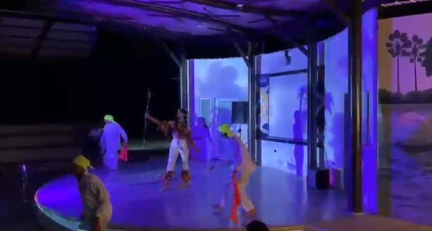
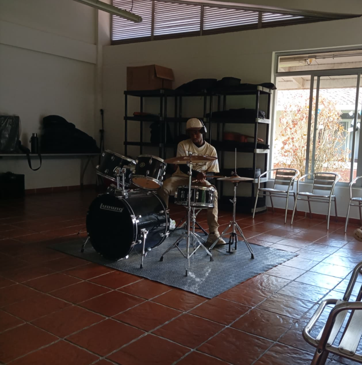
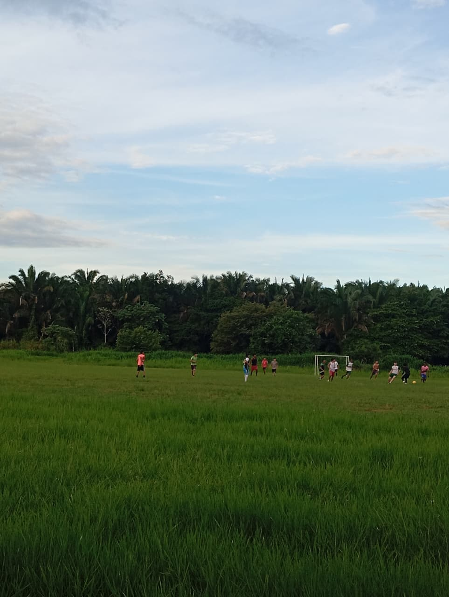

Espacios diseñados para fortalecer la salud, el deporte, la cultura y el desarrollo integral de toda la comunidad universitaria.
En medio de la rutina académica, la danza se ha consolidado como un espacio de bienestar en la universidad. Eric Vivas, estudiante de segundo año de Ingeniería Agronómica e integrante del grupo de danzas titular, asegura que bailar le permite despejar la mente, reducir el estrés y cuidar su salud física y emocional. Además de mejorar la condición física, la coordinación y la energía, la práctica fortalece las amistades y el trabajo en equipo, transformándose en una experiencia que trasciende el escenario. Invita a quienes dudan a animarse a participar, incluso sin experiencia, porque lo importante es disfrutar, aprender y atreverse: “Muchas veces pensamos que no somos capaces, pero cuando nos animamos descubrimos un espacio muy agradable”. También subraya que la danza ayuda a ganar confianza, perder el miedo y cultivar disciplina, compromiso y colaboración. Según él, la universidad debe ofrecer más que calificaciones; debe fomentar experiencias que equilibren lo académico y lo personal.

El docente explicó que el propósito fundamental de este espacio artístico es ofrecer a los estudiantes un escenario de esparcimiento que los desvincule temporalmente de la rigurosidad y la alta carga académica. Reyes destacó que el arte y la música no solo promueven el desarrollo cognitivo del ser humano, sino que se consolidan como un refugio y un mecanismo liberador frente al estrés. A través de la práctica musical, los jóvenes logran canalizar sus emociones y tensiones, encontrando en este espacio un entorno seguro de diversión, disfrute y bienestar integral que complementa de forma equilibrada su formación universitaria.
Nayerlis, integrante del grupo de danza de Utopía. Se destacó el valor de la danza como una herramienta clave para el bienestar integral de la comunidad estudiantil. La estudiante nos hablo que esta expresión artística va mucho más allá de una simple actividad recreativa, constituyéndose como un pilar fundamental para la salud física y mental. Al respecto, se conversó detalladamente sobre cómo la práctica de la danza ofrece un bienestar multidimensional: a nivel físico, actúa como un catalizador para liberar la tensión corporal acumulada por las largas jornadas de estudio; a nivel emocional y psicológico, proporciona un espacio seguro de libre expresión y desconexión mental que fomenta la autoconfianza y la alegría; y a nivel social, fortalece el sentido de pertenencia y compañerismo.

Momento destinado a la expresión corporal y el movimiento. Incluye presentaciones de diversos estilos de baile, promoviendo la cultura, la disciplina y la integración a través del arte danzario.

Espacio dedicado a la expresión musical, con presentaciones en vivo, talleres o muestras de diferentes géneros. Busca fomentar el talento local, la creatividad y el disfrute colectivo a través del sonido y el ritmo.

Bloque deportivo enfocado en la práctica del microfútbol, promoviendo el trabajo en equipo, la sana competencia y la actividad física entre los participantes.